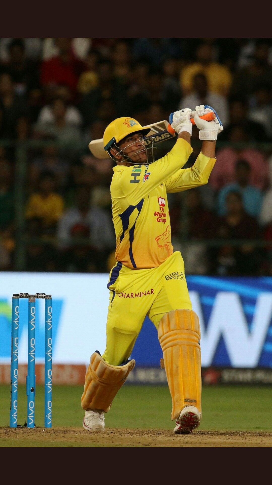

MS Dhoni
Right Hand Batsman
Ipl Debut:2008
Ipl Debut:2008

MS Dhoni is an Indian cricketer who plays for the Chennai franchise in the Indian Premier League. MS Dhoni was born on Jul 07, 1981; and as of 2024, he is 43 years old. MS Dhoni is a wicket keeper from Ranchi and bats right handed. He made his IPL debut in 2008.MS Dhoni has played 250 matches to date in his IPL career and has scored 5082 runs , with an average of 39.09. He has also slammed 24 half-centuries, with his highest IPL score being 84* runs. MS Dhoni has hit 349 fours and 239 sixes in his IPL career.
There is no CSK without Dhoni and there is no Dhoni without CSK. These were the words of N Srinivasan, the former BCCI chief who also has stakes in the franchise.

Mahendra Singh Dhoni's captaincy in the Indian Premier League (IPL) stands as a testament to his exceptional leadership and tactical prowess. As the captain of the Chennai Super Kings (CSK), Dhoni led the team to unprecedented success, clinching the IPL championship five times – in 2010, 2011, 2018, 2021 and 2023. Beyond these triumphs, Dhoni's captaincy was characterized by consistent playoff appearances and victories, showcasing his ability to maintain high standards and keep the team performing at a top level season after season. His masterful tactical decisions, calm demeanor under pressure, and astute recruitment strategies were instrumental in shaping CSK's dominance in the tournament. Dhoni's influence extended beyond the field, fostering a strong team culture marked by mutual respect and camaraderie. His records as captain in the IPL, including the most matches won and the highest win percentage, underscore his unparalleled impact as a leader in T20 cricket. Overall, Dhoni's captaincy and achievements in the IPL have left an indelible mark on the tournament's history, solidifying his legacy as one of the greatest captains in the sport.
Dhoni was signed by Chennai Super Kings for $1.5 million in the 2008 IPL. Since then, the wicketkeeper-batter has never been auctioned off. Following the suspension of CSK and the Rajasthan Royals for violating IPL regulations, the Sanjiv Goenka-owned Rising Pune Supergiants selected Dhoni as their first-choice player in the 2016 IPL draft for INR 12.50 crore. Dhoni rejoined CSK after the franchise’s ban was removed in 2018. In the 2018 IPL player retention, he was named the team’s first-choice player for INR 15 crore. Dhoni was designated as the franchise’s second-choice player in the 2022 IPL player retention list for a fee of INR 12 crore.In IPL 2024, Dhoni will be paid INR 12 Crore. By the end of IPL 2024, Dhoni's 17th season, he will have earned a total IPL salary of INR 188.84 Crores, averaging a salary of INR 11.11 Crore per season. All fans, not just CSK fans, will hope that Dhoni bids adieu in fashion if IPL 2024 is indeed going to be his last-ever season. Let's not forget that he is already 42 and will be just weeks away from turning 43 when the next edition of IPL finishes.


Mahendra Singh Dhoni's impact on the Chennai Super Kings (CSK) franchise in the Indian Premier League (IPL) is nothing short of legendary. As the captain, Dhoni not only led the team to numerous successes but also became synonymous with the CSK brand. Dhoni's leadership transformed CSK into one of the most formidable teams in IPL history. Under his guidance, CSK won multiple IPL titles and consistently made deep runs in the tournament, showcasing his ability to nurture talent, make strategic decisions, and maintain a winning culture. Beyond his on-field contributions, Dhoni's influence extended to the franchise's ethos and fan base. He embodied the spirit of CSK with his composed demeanor, remarkable finishing skills, and a knack for thriving under pressure. Dhoni's leadership instilled a sense of belief and unity within the team, fostering a culture of resilience and excellence.
Dhoni's presence elevated the CSK brand to unprecedented heights. His popularity and charisma helped attract a massive fan following, turning CSK into one of the most supported franchises in the IPL. Dhoni's unwavering loyalty to the team further endeared him to fans, creating an emotional bond that transcended the boundaries of cricket. In summary, Mahendra Singh Dhoni's impact on CSK in the IPL goes beyond trophies and statistics. He is not only the most successful captain in IPL history but also the embodiment of the franchise's values and spirit. Dhoni's legacy at CSK will continue to inspire generations of players and fans, leaving an indelible mark on the franchise and the IPL as a whole.
| 250 Matches |
5082 Runs |
84 Highest Score |
| 24 Fifties |
0 Hundreds |
234 Catches |
Mahendra Singh Dhoni, popularly known as MS Dhoni, is a former Indian cricketer who served as the team’s captain. He is regarded as one of the finest cricketers in Indian history and holds numerous records. Following are some of his most notable records or performances in the Indian Premier League (IPL):
Ms Dhoni has played the most IPL matches as captain: Dhoni has captained a team in the most IPL matches, with a total of 200 matches.
Ms Dhoni has the most IPL victories as a skipper: Dhoni has also led his team to the most IPL victories, with a total of 110 triumphs.
The most straight victories as captain: Dhoni holds the record for most consecutive wins as captain in the IPL, with a nine-game winning streak.
Ms Dhoni has scored the most runs in IPL history: Dhoni is the IPL’s highest run-scorer, having scored 5,412 runs in 190 matches.
Ms Dhoni has the most IPL catches: Dhoni is also the leading fielder in terms of catches in the IPL, with 81 catches.
Ms Dhoni is the most perplexing player in the IPL: Dhoni has the most stumpings in the IPL, with 38 overall.
The majority of Man of the Match honors: Dhoni also owns the most Man of the Match accolades in the IPL, with 28 in total.
The majority of final appearances: Dhoni has appeared in the most IPL finals, with a total of eight.
MS DHONI has the most not-outs in the IPL: Dhoni has the most not outs in the IPL, with a total of 57.
The most successful run chases: With a total of 41 successful chases, Dhoni has led his team to the most successful run chases in the IPL.
MS DHONI has played the most matches: Dhoni has appeared in the most IPL matches, with a total of 190 appearances.
The majority of sixes: Dhoni has smashed the most sixes in IPL history, with a total of 216.
Most runs in one season: Dhoni holds the IPL record for most runs scored in a single season, with 673 runs in the 2010 season.
Individual with the highest score: Dhoni’s highest individual score in the IPL was 84 not out in the 2012 season.
The majority of centuries: Dhoni has the most hundreds in the IPL, having scored four in total.